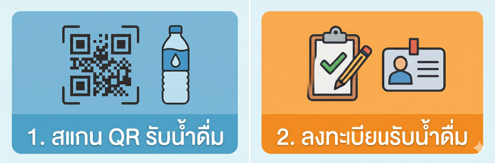

1. ระบบสมาชิกและ LINE OA

เริ่มต้น: ค้นหาบัญชี LINE OA เพื่อลงทะเบียนรับสิทธิ์ หรือกดเมนู "สแกนรับน้ำ"
1
สมัครสมาชิก
กรอกข้อมูลพื้นฐานและจังหวัด
2
สแกน QR Code
เล็งกล้องไปที่หน้าจอหน้าตู้
3
ตรวจสอบโควตา
แสดงสิทธิ์คงเหลือรายวัน
4
สรุปรายงาน
แจ้งปริมาณน้ำที่กดจริงผ่าน LINE
1. ระบบสมาชิกและทางเลือกการใช้งาน (ต่อ)
💳 📱
ทางเลือกเสริม: นอกจากการสแกน QR Code แล้ว ท่านยังสามารถยืนยันตัวตนเพื่อรับน้ำได้โดยใช้ บัตรประชาชน หรือ กรอกเบอร์โทรศัพท์
5
เสียบบัตรประชาชนเพื่อรับน้ำดื่ม
กดเมนู "เสียบบัตรประชาชน" บนหน้าตู้
และเสียบบัตรที่ช่องอ่านบัตรเพื่อยืนยันตัวตน
6
กรอกเบอร์โทรเพื่อรับน้ำดื่ม
กดเมนู "กรอกเบอร์โทรศัพท์" บนหน้าตู้
และพิมพ์เบอร์ที่ท่านได้ลงทะเบียนไว้ในระบบ
2. ขั้นตอนการใช้งานหน้าตู้ (Kiosk)
1
เลือกเมนูบริการ
แตะปุ่ม "สแกน QR Code เพื่อรับน้ำ"
2
สแกนรหัส
นำแอป LINE มาสแกน QR ที่แสดงบนตู้
3
เริ่มจ่ายน้ำ
กดปุ่มเริ่มจ่ายน้ำตามปริมาณที่ได้รับ
4
ตรวจสอบคุณภาพ
ดูค่า TDS และรับภาชนะกลับ
3. ระบบจัดการและรายงาน (Web Admin Overview)
1
Dashboard สถิติรวม
วิเคราะห์ยอดการใช้งานรวม สถิติรายวัน
และสถานะออนไลน์ของทุกตู้ในเครือข่าย
2
Geographic Map
ติดตามตำแหน่งติดตั้งตู้แบบ Real-time
ระบุสถานะความขัดข้องได้ทันที
3
System Settings
จัดการพื้นที่ให้บริการ กำหนดโควตาน้ำฟรี
และตั้งค่าพารามิเตอร์ของระบบส่วนกลาง
รายงานเชิงลึก
ระบบรองรับการดูรายละเอียดสมาชิก
และประวัติการรับน้ำแยกตามรายเครื่อง
4. การจัดการข้อมูลและรายงานละเอียด
1
รายงานการใช้งาน
แสดงประวัติการรับน้ำทั้งหมด
ระบุชื่อผู้ใช้ ปริมาณ และสถานีที่ใช้บริการ
2
ข้อมูลสมาชิก
จัดการรายชื่อสมาชิก ค้นหาเบอร์โทร
และตรวจสอบยอดโควตาสะสมรายบุคคล
3
รายการตู้น้ำในเครือข่าย (Live Monitoring)
มอนิเตอร์สถานะ Hardware รายตู้: ค่า TDS, ความแรงสัญญาณ, เวอร์ชั่นแอป และสุขภาพไส้กรอง (Filter Status)
Admin Tip: ท่านสามารถส่งออกรายงาน (Export) ข้อมูลสมาชิกและประวัติการใช้งานเป็นไฟล์ Excel เพื่อนำไปวิเคราะห์ข้อมูลต่อได้ผ่านปุ่มจัดการในแต่ละหน้า